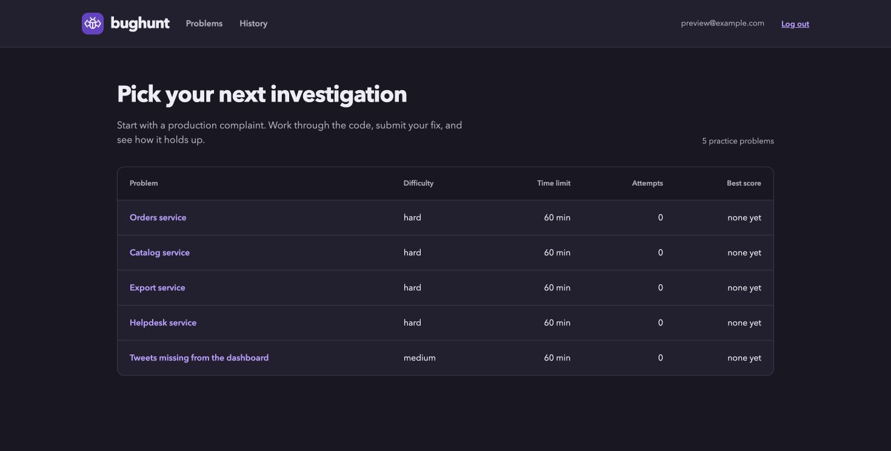

BugHunt
Practice debugging a production problem, with a real codebase and a hidden grader.
Web app / Private source

Practice the investigation
Each problem starts with a production complaint and a runnable project containing planted bugs. Open a VS Code workspace in the browser, reproduce the failure, and submit a fix before the timer ends.
The hidden grader checks correctness and production behavior, including validation and error recovery. Results and attempt history let you see what your fix covered and what it missed.
Keep each attempt separate
Each attempt gets its own Fly machine. The timer starts when the editor is ready, and a queue manages demand when all session slots are taken.
Code snapshots preserve progress during an attempt. When it ends, grading runs on a separate machine with the hidden checks kept outside the candidate workspace.
Built with
Python, FastAPI, Jinja templates, and PostgreSQL. Railway hosts the practice site, with Fly machines for workspaces and grading.